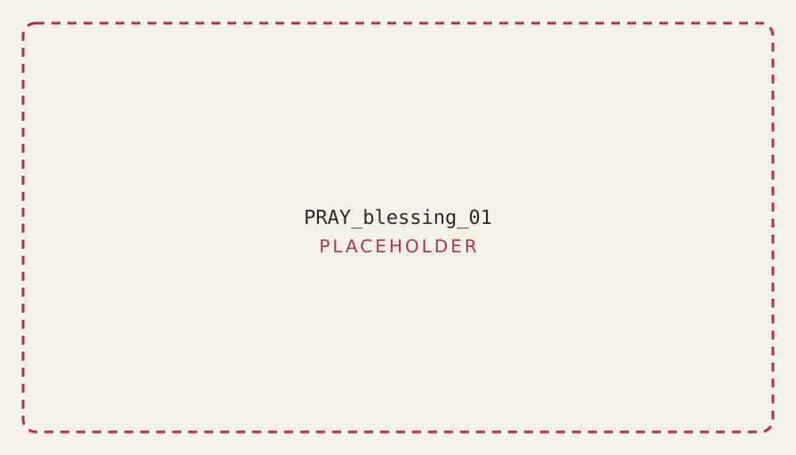

Prayer for the One Who Begins
TODO (author)
Insert the author's original opening prayer here. The text was not available to the book builder; this block is intentionally empty.
Slot: one page, centred, English and Hebrew side by side; Hebrew must be set RTL with niqqud.
The Priestly Blessing
Numbers 6:24–26. Your first page of Hebrew: fifteen words, thirteen different letters.
יְבָרֶכְךָ יְהוָה וְיִשְׁמְרֶךָ׃יָאֵר יְהוָה פָּנָיו אֵלֶיךָ וִיחֻנֶּךָּ׃יִשָּׂא יְהוָה פָּנָיו אֵלֶיךָ וְיָשֵׂם לְךָ שָׁלוֹם׃

Source: data/corpus/registry.json (bless-priestly-1, bless-priestly-2, bless-priestly-3). Status: verified. The divine name is shown as written in the source; it is read aloud as “Adonai”.
How to use this book
Each letter has one page. Look at the picture, find the letter hiding in it, trace the strokes in the order shown, say the sound, then scan the code or open the link to hear it spoken by a man or a woman and to trace on a screen.
Author text slot. Replace with final how-to copy. The companion web edition URL pattern is https://alef.example.org/#/letters/<id> (host is a placeholder until a domain exists).
Contents
- The alphabet at a glance
- The 27 letters (22 letters and 5 final forms)
- The vowels
- Reading practice
- The Priestly Blessing, word by word
- Survival Hebrew
Prayers and verses from the corpus
21 texts from data/corpus/registry.json. Statuses are as recorded there; this book builder did not verify them.
Shema Yisrael Deuteronomy 6:4 · verified
שְׁמַע יִשְׂרָאֵל יְהוָה אֱלֹהֵינוּ יְהוָה אֶחָד׃
HEAR, O ISRAEL: THE LORD OUR GOD, THE LORD IS ONE.
V'ahavta Deuteronomy 6:5-9 · verified
וְאָהַבְתָּ אֵת יְהוָה אֱלֹהֶיךָ בְּכָל־לְבָבְךָ וּבְכָל־נַפְשְׁךָ וּבְכָל־מְאֹדֶךָ׃
וְהָיוּ הַדְּבָרִים הָאֵלֶּה אֲשֶׁר אָנֹכִי מְצַוְּךָ הַיּוֹם עַל־לְבָבֶךָ׃
וְשִׁנַּנְתָּם לְבָנֶיךָ וְדִבַּרְתָּ בָּם בְּשִׁבְתְּךָ בְּבֵיתֶךָ וּבְלֶכְתְּךָ בַדֶּרֶךְ וּבְשָׁכְבְּךָ וּבְקוּמֶךָ׃
וּקְשַׁרְתָּם לְאוֹת עַל־יָדֶךָ וְהָיוּ לְטֹטָפֹת בֵּין עֵינֶיךָ׃
וּכְתַבְתָּם עַל־מְזוּזֹת בֵּיתֶךָ וּבִשְׁעָרֶיךָ׃
And thou shalt love the LORD thy God with all thy heart, and with all thy soul, and with all thy might.
And these words, which I command thee this day, shall be upon thy heart;
and thou shalt teach them diligently unto thy children, and shalt talk of them when thou sittest in thy house, and when thou walkest by the way, and when thou liest down, and when thou risest up.
And thou shalt bind them for a sign upon thy hand, and they shall be for frontlets between thine eyes.
And thou shalt write them upon the door-posts of thy house, and upon thy gates.
Shema and V'ahavta (Deut 6:4-9) Deuteronomy 6:4-9 · verified
שְׁמַע יִשְׂרָאֵל יְהוָה אֱלֹהֵינוּ יְהוָה אֶחָד׃
וְאָהַבְתָּ אֵת יְהוָה אֱלֹהֶיךָ בְּכָל־לְבָבְךָ וּבְכָל־נַפְשְׁךָ וּבְכָל־מְאֹדֶךָ׃
וְהָיוּ הַדְּבָרִים הָאֵלֶּה אֲשֶׁר אָנֹכִי מְצַוְּךָ הַיּוֹם עַל־לְבָבֶךָ׃
וְשִׁנַּנְתָּם לְבָנֶיךָ וְדִבַּרְתָּ בָּם בְּשִׁבְתְּךָ בְּבֵיתֶךָ וּבְלֶכְתְּךָ בַדֶּרֶךְ וּבְשָׁכְבְּךָ וּבְקוּמֶךָ׃
וּקְשַׁרְתָּם לְאוֹת עַל־יָדֶךָ וְהָיוּ לְטֹטָפֹת בֵּין עֵינֶיךָ׃
וּכְתַבְתָּם עַל־מְזוּזֹת בֵּיתֶךָ וּבִשְׁעָרֶיךָ׃
HEAR, O ISRAEL: THE LORD OUR GOD, THE LORD IS ONE.
And thou shalt love the LORD thy God with all thy heart, and with all thy soul, and with all thy might.
And these words, which I command thee this day, shall be upon thy heart;
and thou shalt teach them diligently unto thy children, and shalt talk of them when thou sittest in thy house, and when thou walkest by the way, and when thou liest down, and when thou risest up.
And thou shalt bind them for a sign upon thy hand, and they shall be for frontlets between thine eyes.
And thou shalt write them upon the door-posts of thy house, and upon thy gates.
Baruch shem (said after Shema line) Siddur: Baruch shem kevod malchuto · verified
בָּרוּךְ שֵׁם כְּבוֹד מַלְכוּתוֹ לְעוֹלָם וָעֶד׃
Blessed is the name of the glory of his kingship for ever and ever.
Blessing formula (Baruch atah Adonai Eloheinu Melech ha'olam) Siddur: blessing formula · verified
בָּרוּךְ אַתָּה יְהוָה אֱלֹהֵינוּ מֶלֶךְ הָעוֹלָם׃
Blessed are you, LORD our God, king of the world,
Mah Tovu (first verse) Numbers 24:5 · verified
מַה־טֹּבוּ אֹהָלֶיךָ יַעֲקֹב מִשְׁכְּנֹתֶיךָ יִשְׂרָאֵל׃
How goodly are thy tents, O Jacob, Thy dwellings, O Israel!
Mi Chamocha Exodus 15:11 · verified
מִי־כָמֹכָה בָּאֵלִם יְהוָה מִי כָּמֹכָה נֶאְדָּר בַּקֹּדֶשׁ נוֹרָא תְהִלֹּת עֹשֵׂה פֶלֶא׃
Who is like unto Thee, O LORD, among the mighty? Who is like unto Thee, glorious in holiness, Fearful in praises, doing wonders?
El na refa na lah (Moses' prayer for healing) Numbers 12:13 (second half) · verified
אֵל נָא רְפָא נָא לָהּ׃
God, please, heal her, please.
Kiddush (Shabbat verses) Genesis 2:1-3 · verified
וַיְכֻלּוּ הַשָּׁמַיִם וְהָאָרֶץ וְכָל־צְבָאָם׃
וַיְכַל אֱלֹהִים בַּיּוֹם הַשְּׁבִיעִי מְלַאכְתּוֹ אֲשֶׁר עָשָׂה וַיִּשְׁבֹּת בַּיּוֹם הַשְּׁבִיעִי מִכָּל־מְלַאכְתּוֹ אֲשֶׁר עָשָׂה׃
וַיְבָרֶךְ אֱלֹהִים אֶת־יוֹם הַשְּׁבִיעִי וַיְקַדֵּשׁ אֹתוֹ כִּי בוֹ שָׁבַת מִכָּל־מְלַאכְתּוֹ אֲשֶׁר־בָּרָא אֱלֹהִים לַעֲשׂוֹת׃
And the heaven and the earth were finished, and all the host of them.
And on the seventh day God finished His work which He had made; and He rested on the seventh day from all His work which He had made.
And God blessed the seventh day, and hallowed it; because that in it He rested from all His work which God in creating had made.
Blessing over wine Siddur: blessing over wine · verified
בָּרוּךְ אַתָּה יְהוָה אֱלֹהֵינוּ מֶלֶךְ הָעוֹלָם בּוֹרֵא פְּרִי הַגָּפֶן׃
Blessed are you, LORD our God, king of the world, who creates the fruit of the vine.
HaMotzi (blessing over bread) Siddur: HaMotzi · verified
בָּרוּךְ אַתָּה יְהוָה אֱלֹהֵינוּ מֶלֶךְ הָעוֹלָם הַמּוֹצִיא לֶחֶם מִן הָאָרֶץ׃
Blessed are you, LORD our God, king of the world, who brings forth bread from the earth.
Shabbat candle blessing Siddur: Shabbat candle blessing · verified
בָּרוּךְ אַתָּה יְהוָה אֱלֹהֵינוּ מֶלֶךְ הָעוֹלָם אֲשֶׁר קִדְּשָׁנוּ בְּמִצְוֹתָיו וְצִוָּנוּ לְהַדְלִיק נֵר שֶׁל שַׁבָּת׃
Blessed are you, LORD our God, king of the world, who made us holy with his commandments and commanded us to light the lamp of Shabbat.
Torah blessing (before reading/study) Siddur: Torah blessing (asher bachar banu) · verified
בָּרוּךְ אַתָּה יְהוָה אֱלֹהֵינוּ מֶלֶךְ הָעוֹלָם אֲשֶׁר בָּחַר בָּנוּ מִכָּל־הָעַמִּים וְנָתַן לָנוּ אֶת־תּוֹרָתוֹ בָּרוּךְ אַתָּה יְהוָה נוֹתֵן הַתּוֹרָה׃
Blessed are you, LORD our God, king of the world, who chose us from all the peoples and gave us his Torah. Blessed are you, LORD, giver of the Torah.
Barchu (call to the Torah blessing) Siddur: Barchu before the Torah reading · verified
בָּרְכוּ אֶת יְהוָה הַמְּבֹרָךְ׃
בָּרוּךְ יְהוָה הַמְּבֹרָךְ לְעוֹלָם וָעֶד׃
Bless the LORD, the blessed one.
Blessed is the LORD, the blessed one, for ever and ever.
Torah blessing (after reading) Siddur: Torah blessing after the reading · verified
בָּרוּךְ אַתָּה יְהוָה אֱלֹהֵינוּ מֶלֶךְ הָעוֹלָם אֲשֶׁר נָתַן לָנוּ תּוֹרַת אֱמֶת וְחַיֵּי עוֹלָם נָטַע בְּתוֹכֵנוּ׃ בָּרוּךְ אַתָּה יְהוָה נוֹתֵן הַתּוֹרָה׃
Blessed are you, LORD our God, king of the world, who gave us a Torah of truth and planted eternal life in our midst. Blessed are you, LORD, giver of the Torah.
Amidah preface: open my lips Psalm 51:17 (Amidah preface) · verified
אֲדֹנָי שְׂפָתַי תִּפְתָּח וּפִי יַגִּיד תְּהִלָּתֶךָ׃
My Lord, open my lips, and my mouth will declare your praise.
Amidah opening (Avot) Siddur: Amidah, first blessing (Avot) · verified
בָּרוּךְ אַתָּה יְהוָה אֱלֹהֵינוּ וֵאלֹהֵי אֲבוֹתֵינוּ אֱלֹהֵי אַבְרָהָם אֱלֹהֵי יִצְחָק וֵאלֹהֵי יַעֲקֹב הָאֵל הַגָּדוֹל הַגִּבּוֹר וְהַנּוֹרָא אֵל עֶלְיוֹן גּוֹמֵל חֲסָדִים טוֹבִים קוֹנֵה הַכֹּל וְזוֹכֵר חַסְדֵּי אָבוֹת וּמֵבִיא גוֹאֵל לִבְנֵי בְנֵיהֶם לְמַעַן שְׁמוֹ בְּאַהֲבָה׃ מֶלֶךְ עוֹזֵר וּמוֹשִׁיעַ וּמָגֵן׃
Blessed are you, LORD our God and God of our ancestors, God of Abraham, God of Isaac and God of Jacob; the great, mighty and awesome God, God Most High, who bestows loving-kindnesses, creates all things, remembers the kindnesses of the ancestors, and brings a redeemer to their children's children for the sake of his name, in love. King, helper, saviour and shield.
Aleinu, first paragraph Siddur: Aleinu (first paragraph) · verified
עָלֵינוּ לְשַׁבֵּחַ לַאֲדוֹן הַכֹּל לָתֵת גְּדֻלָּה לְיוֹצֵר בְּרֵאשִׁית שֶׁלֹּא עָשָׂנוּ כְּגוֹיֵי הָאֲרָצוֹת וְלֹא שָׂמָנוּ כְּמִשְׁפְּחוֹת הָאֲדָמָה שֶׁלֹּא שָׂם חֶלְקֵנוּ כָּהֶם וְגוֹרָלֵנוּ כְּכָל־הֲמוֹנָם שֶׁהֵם מִשְׁתַּחֲוִים לָהֶבֶל וָרִיק וּמִתְפַּלְּלִים אֶל־אֵל לֹא יוֹשִׁיעַ וַאֲנַחְנוּ מִשְׁתַּחֲוִים לִפְנֵי מֶלֶךְ מַלְכֵי הַמְּלָכִים הַקָּדוֹשׁ בָּרוּךְ הוּא שֶׁהוּא נוֹטֶה שָׁמַיִם וְיוֹסֵד אָרֶץ וּמוֹשַׁב יְקָרוֹ בַּשָּׁמַיִם מִמַּעַל וּשְׁכִינַת עֻזּוֹ בְּגָבְהֵי מְרוֹמִים הוּא אֱלֹהֵינוּ וְאֵין עוֹד אַחֵר אֱמֶת מַלְכֵּנוּ וְאֶפֶס זוּלָתוֹ כַּכָּתוּב בַּתּוֹרָה וְיָדַעְתָּ הַיּוֹם וַהֲשֵׁבֹתָ אֶל־לְבָבֶךָ כִּי יְהוָה הוּא הָאֱלֹהִים בַּשָּׁמַיִם מִמַּעַל וְעַל־הָאָרֶץ מִתָּחַת אֵין עוֹד׃
It is our duty to praise the Master of all, to ascribe greatness to the Creator of the beginning: that he has not made us like the nations of the lands and has not placed us like the families of the earth, that he has not set our portion like theirs nor our lot like all their multitude. For they bow to vanity and emptiness and pray to a god who does not save; but we bow before the King of kings of kings, the Holy One, blessed be he, who stretches out the heavens and founds the earth, whose seat of glory is in the heavens above and the presence of his might in the loftiest heights. He is our God; there is no other. Truly he is our king; there is nothing besides him. As it is written in the Torah: "You shall know this day and take it to heart that the LORD is God, in the heavens above and on the earth beneath; there is no other."
Adon Olam Siddur: Adon Olam · verified
אֲדוֹן עוֹלָם אֲשֶׁר מָלַךְ בְּטֶרֶם כָּל יְצִיר נִבְרָא׃
לְעֵת נַעֲשָׂה בְחֶפְצוֹ כֹּל אֲזַי מֶלֶךְ שְׁמוֹ נִקְרָא׃
וְאַחֲרֵי כִּכְלוֹת הַכֹּל לְבַדּוֹ יִמְלֹךְ נוֹרָא׃
וְהוּא הָיָה וְהוּא הֹוֶה וְהוּא יִהְיֶה בְּתִפְאָרָה׃
וְהוּא אֶחָד וְאֵין שֵׁנִי לְהַמְשִׁיל לוֹ לְהַחְבִּירָה׃
בְּלִי רֵאשִׁית בְּלִי תַכְלִית וְלוֹ הָעֹז וְהַמִּשְׂרָה׃
וְהוּא אֵלִי וְחַי גּוֹאֲלִי וְצוּר חֶבְלִי בְּעֵת צָרָה׃
וְהוּא נִסִּי וּמָנוֹס לִי מְנָת כּוֹסִי בְּיוֹם אֶקְרָא׃
בְּיָדוֹ אַפְקִיד רוּחִי בְּעֵת אִישַׁן וְאָעִירָה׃
וְעִם רוּחִי גְּוִיָּתִי יְהוָה לִי וְלֹא אִירָא׃
Lord of the world, who reigned before any form was created.
At the time when all was made by his will, then "King" was his name proclaimed.
And after all things have ended, he alone, the awesome one, will reign.
And he was, and he is, and he will be, in glory.
And he is one, and there is no second, to compare to him or to join with him.
Without beginning, without end; to him belong the power and the dominion.
And he is my God, and my living redeemer, and the rock of my portion in time of distress.
And he is my banner and my refuge, the portion of my cup on the day I call.
Into his hand I commit my spirit, when I sleep and when I wake.
And with my spirit, my body too: the LORD is with me and I will not fear.
Mourner's Kaddish Siddur: Mourner's Kaddish · verified
יִתְגַּדַּל וְיִתְקַדַּשׁ שְׁמֵהּ רַבָּא אָמֵן
בְּעָלְמָא דִּי־בְרָא כִרְעוּתֵהּ וְיַמְלִיךְ מַלְכוּתֵהּ בְּחַיֵּיכוֹן וּבְיוֹמֵיכוֹן וּבְחַיֵּי דְכָל־בֵּית יִשְׂרָאֵל בַּעֲגָלָא וּבִזְמַן קָרִיב וְאִמְרוּ אָמֵן׃
יְהֵא שְׁמֵהּ רַבָּא מְבָרַךְ לְעָלַם וּלְעָלְמֵי עָלְמַיָּא
יִתְבָּרַךְ וְיִשְׁתַּבַּח וְיִתְפָּאַר וְיִתְרוֹמַם וְיִתְנַשֵּׂא וְיִתְהַדָּר וְיִתְעַלֶּה וְיִתְהַלָּל שְׁמֵהּ דְקוּדְשָׁא בְּרִיךְ הוּא
לְעֵלָּא מִן־כָּל־בִּרְכָתָא וְשִׁירָתָא תֻּשְׁבְּחָתָא וְנֶחָמָתָא דַּאֲמִירָן בְּעָלְמָא וְאִמְרוּ אָמֵן׃
יְהֵא שְׁלָמָא רַבָּא מִן־שְׁמַיָּא וְחַיִּים עָלֵינוּ וְעַל־כָּל־יִשְׂרָאֵל וְאִמְרוּ אָמֵן׃
עוֹשֶׂה שָׁלוֹם בִּמְרוֹמָיו הוּא יַעֲשֶׂה שָׁלוֹם עָלֵינוּ וְעַל כָּל יִשְׂרָאֵל וְאִמְרוּ אָמֵן׃
Magnified and sanctified be his great name. (Amen.)
In the world that he created by his will; may he establish his kingdom in your lifetime and in your days and in the lifetime of all the house of Israel, speedily and soon; and say: Amen.
May his great name be blessed for ever and for all eternities.
Blessed, praised, glorified, exalted, extolled, honoured, raised and lauded be the name of the Holy One, blessed be he,
beyond all the blessings and songs, praises and consolations that are uttered in the world; and say: Amen.
May there be great peace from heaven, and life, for us and for all Israel; and say: Amen.
He who makes peace in his high places, may he make peace for us and for all Israel; and say: Amen.
Birkat Hamazon opener (HaZan et haolam) Siddur: Birkat Hamazon, first blessing (opening) · verified
בָּרוּךְ אַתָּה יְהוָה אֱלֹהֵינוּ מֶלֶךְ הָעוֹלָם הַזָּן אֶת הָעוֹלָם כֻּלּוֹ בְּטוּבוֹ בְּחֵן בְּחֶסֶד וּבְרַחֲמִים הוּא נוֹתֵן לֶחֶם לְכָל בָּשָׂר כִּי לְעוֹלָם חַסְדּוֹ׃
Blessed are you, LORD our God, king of the world, who feeds the whole world, all of it, in his goodness, with grace, kindness and mercy. He gives bread to all flesh, for his kindness is for ever.
Colophon
Draft proof generated by book/build.mjs. Letters data: data/letters/letters.json. Hebrew set in local fonts (FreeSerif / DejaVu); the production font is a decision for the InDesign master.
Text attributions (from the registry)
Hebrew text: Unicode/XML Leningrad Codex (UXLC) UXLC 2.6 (file dated 19 Oct 2026), Tanach.us Inc., West Redding, CT, USA (tanach.us; "may be viewed or copied without restriction"). Cantillation marks removed. Not the WLC. English: JPS 1917, public domain.
Hebrew text: The Metsudah siddur (Metsudah Publications, 1981), as digitised on Sefaria where it is labelled CC-BY. Attribute to Metsudah Publications and credit Sefaria as the source. THE LICENCE LABEL IS SEFARIA'S AND IS NOT INDEPENDENTLY VERIFIED. English: original literal gloss.
Hebrew text: Siddur Edot HaMizrach, "Shaliehsaboo Edition", from Sefaria where it is labelled CC0 (no attribution required; credit given as a courtesy). Label not independently verified. English: original literal gloss.
Hebrew text: Unicode/XML Leningrad Codex (UXLC) UXLC 2.6 (file dated 19 Oct 2026), Tanach.us Inc., West Redding, CT, USA (tanach.us; "may be viewed or copied without restriction"). Cantillation marks removed. Not the WLC. English: original literal gloss.
Hebrew text: Torat Emet 357 (toratemetfreeware.com), as digitised on Sefaria where it is labelled Public Domain. Label not independently verified. English: original literal gloss.
Image credit line (use once real images replace placeholders): Illustrations created with AI tools and edited by the author.